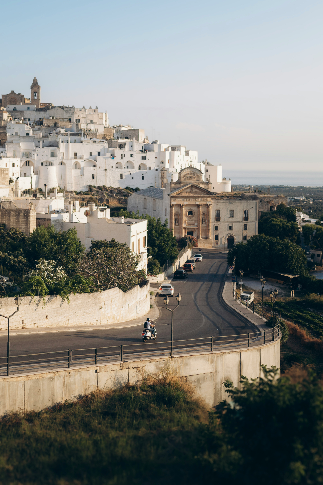
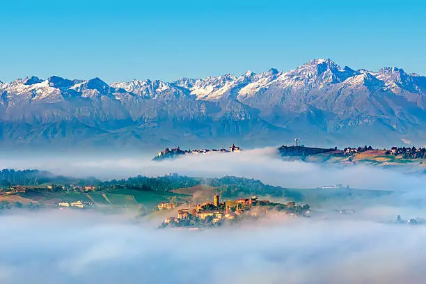
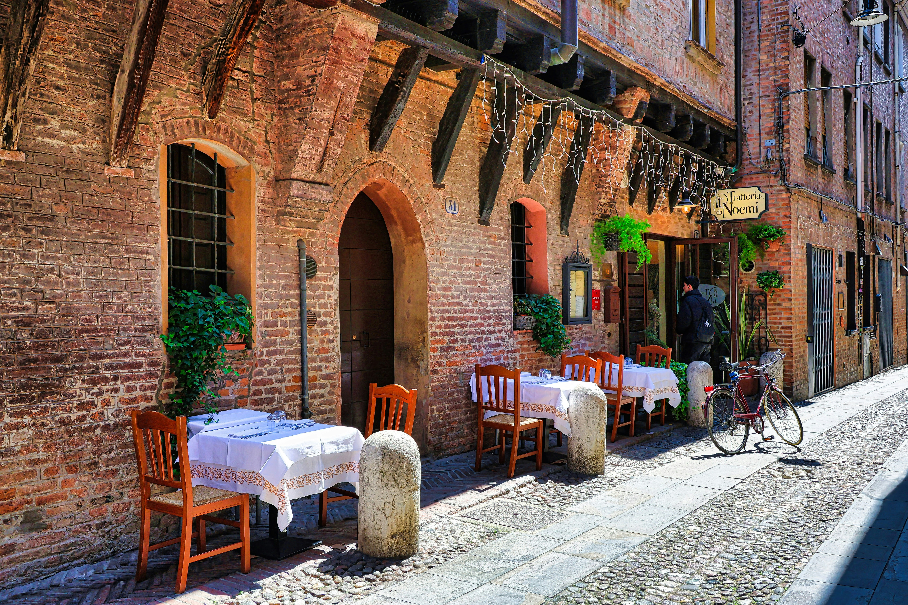
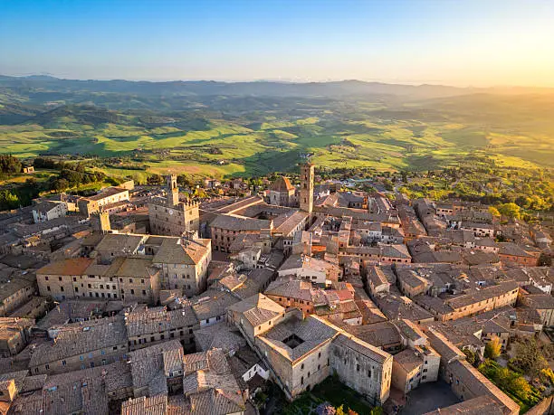
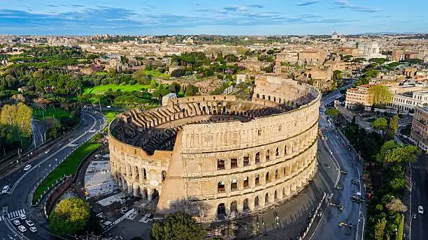
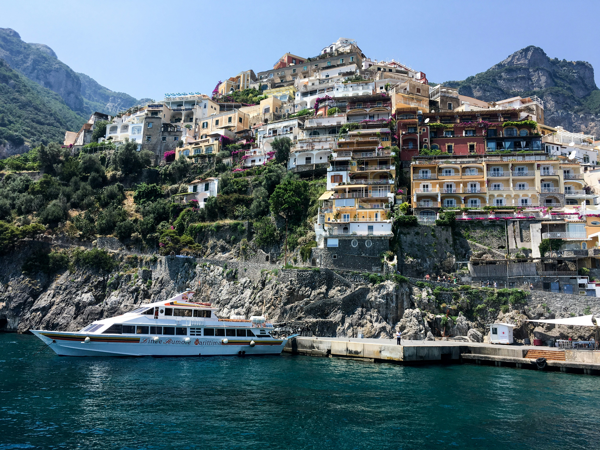
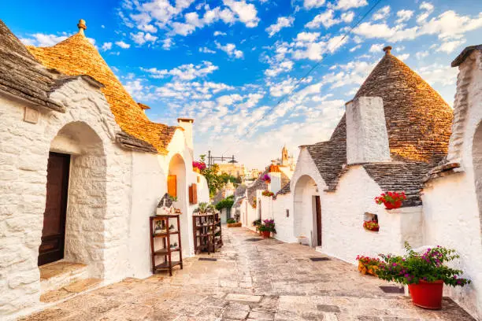
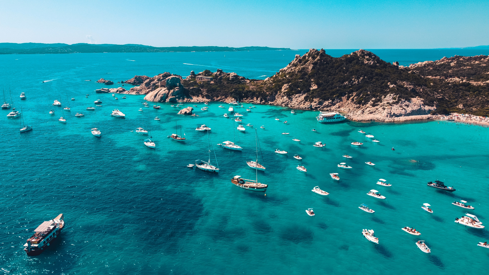
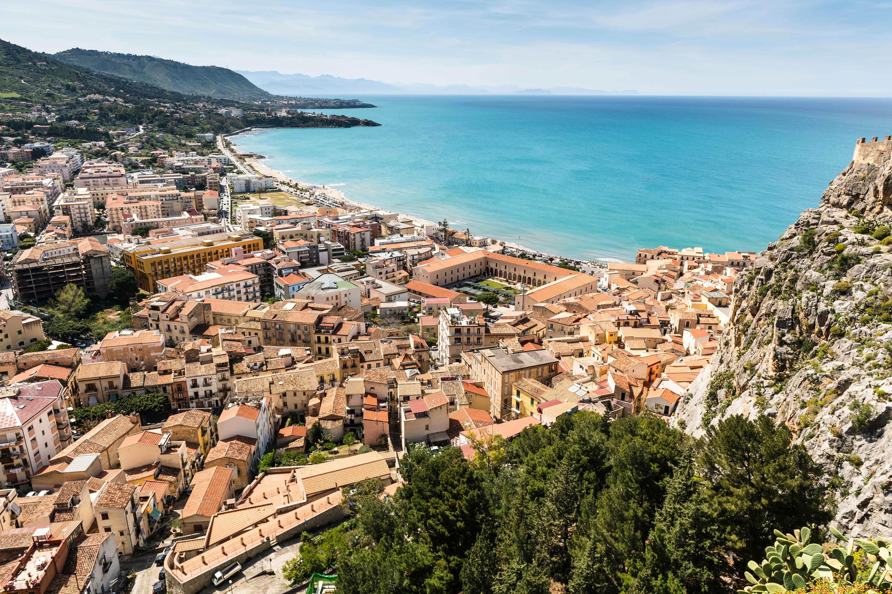

Search
Favourite
Search
Favourite

From the Alps to the Mediterranean — 21 unique worlds to explore
From the snow-capped peaks of the Aosta Valley to the sun-drenched beaches of Sicily, each of Italy's 21 regions offers something uniquely its own. A diversity reflected not only in the landscape and climate, but also in the food, architecture, dialects and traditions. Every region is a journey in itself — and together they form the most beautiful country in the world.

Italy's smallest region, nestled among the highest Alps peaks. A paradise of castles, glaciers and winter sports. Courmayeur and Monte Bianco await year-round.

Elegant Turin, world-famous Barolo and Barbaresco wines, the Langhe hills and the Sacra di San Michele. Mountains, mist and magnificent cuisine in one refined region.

Milan — Italy's fashion and finance capital — sits alongside breathtaking lakes Como, Maggiore and Garda. Lombardy blends cosmopolitan energy with timeless natural beauty.

The Dolomites in their most spectacular form. Ski resorts, alpine lakes, medieval castles and farm-to-table traditions. Madonna di Campiglio draws visitors every season.

Where Italy meets the Alps with Austrian charm. UNESCO Dolomites, world-class spa resorts, apple orchards and crisp white wines from volcanic terraced vineyards.

Venice on water, Verona's Roman arena, Lake Garda and the Prosecco hills. Veneto is a region of wonders — from art cities of global renown to pristine Dolomite nature.

A crossroads of cultures where the Friulian Dolomites meet the Adriatic. Trieste — elegant and cosmopolitan — anchors a region rich in Roman ruins, wine and wild nature.

The Italian Riviera: pastel villages clinging to cliffs, hidden beaches and Portofino's glamour. Cinque Terre is one of Italy's most photographed — and most magical — places.

Italy's food capital: birthplace of Parmigiano, prosciutto di Parma, tagliatelle al ragù and Lambrusco. Bologna's arcades, Ravenna's mosaics and Rimini's beaches complete the picture.

Florence, Siena, Pisa and the rolling hills of Chianti. Tuscany is Renaissance art, cypress-lined roads, world-famous wine and a landscape that looks like a painting.

The Green Heart of Italy. Assisi's Basilica, Perugia's chocolate festival, Gubbio's medieval streets and Norcia's legendary black truffle — Umbria rewards the curious traveller.

Adriatic beaches, the Renaissance Palazzo Ducale di Urbino, medieval villages and caves of Frasassi. One of Italy's best-kept secrets, rich in art and authentic flavours.

Rome — the Eternal City — is the crown jewel, but Lazio also offers volcanic lakes, Pontine islands, medieval villages and the gardens of Ninfa. A region far beyond its capital.

Where the Apennines plunge toward the Adriatic. Italy's only Apennine glacier, Gran Sasso, national parks sheltering wolves and bears, and beautiful coastline — wild and untouched.

Italy's hidden region — small, ancient and magnificently overlooked. Roman ruins at Saepinum, shepherd transhumance routes, coastal cliffs and some of Italy's most authentic food.

Naples, Pompeii, the Amalfi Coast, Capri and Ischia. Campania is a sensory overload — dramatic coastlines, ancient ruins, volcanic landscapes and the birthplace of pizza.

Between two seas — Adriatic and Ionian. Whitewashed trulli of Alberobello, Castel del Monte, crystal-clear waters and orecchiette pasta. The sun-drenched heel of Italy's boot.

Matera — UNESCO City of Stones — is among the world's oldest continuously inhabited cities. Ancient Lucania, Pollino National Park and two seas frame this deeply moving region.

The tip of the Italian boot, jutting into the Mediterranean. The Riace Bronzes, Tropea's clifftop cathedral, the Sila national park and some of the clearest water in Italy.

Emerald waters, ancient nuraghi towers, the wild Barbagia interior and Costa Smeralda's glamour. Sardinia is a world apart — proud, ancient and breathtakingly beautiful.

The Mediterranean's largest island: Etna's fire, Valle dei Templi's Greek grandeur, Palermo's street food markets, the Aeolian Islands and the finest cannoli you'll ever taste.